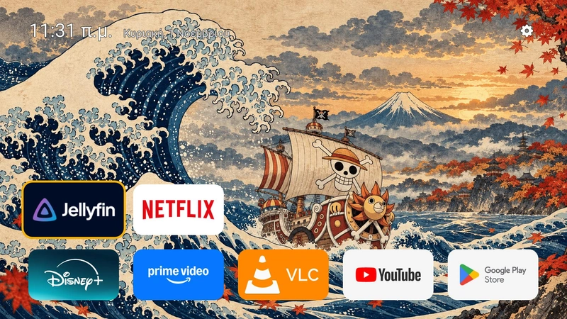
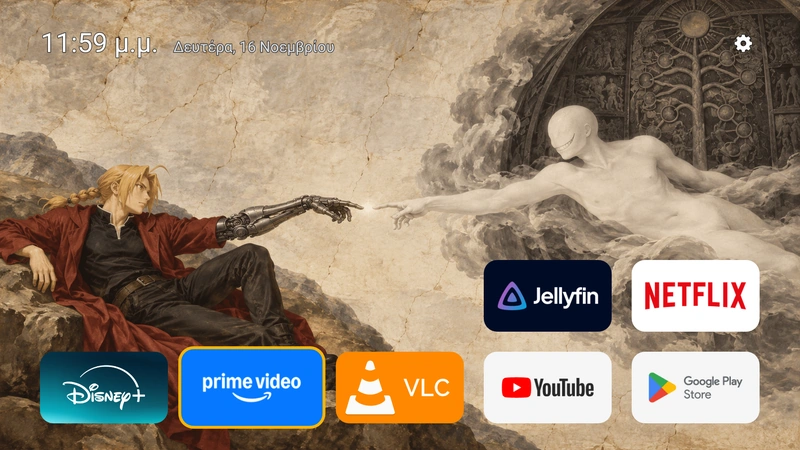
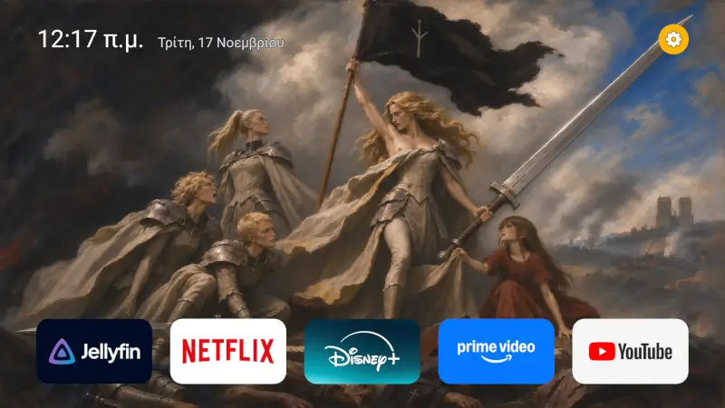
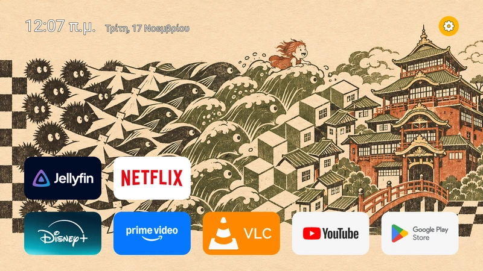
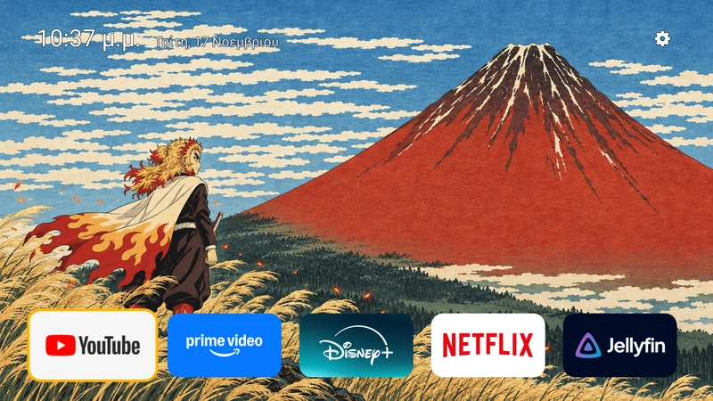

How it started
It started with me tinkering with CleanYourTV and searching for a fast Android launcher with zero dependencies. I found Luncher. It was fast, but, well, the TV became dull. So I thought, why not spice it up with some anime wallpapers?
But not just anime. There are other people living in this house. And they don’t share my love for Japanese pop culture (I pity the fools!). Why not try to make the TV look like a painting? That’s where I started fooling around with AI, making AI Crossovers based on well-known paintings but with an anime twist.

I haven’t heard any complaints so far, so the people in my house are either cool with my wallpaper decisions or they’re indifferent (most likely winner).
The thing is, I like it. I might just turn on the TV for the fun of it, to burn some electricity and enjoy the view. No movies, no shows, just sitting there at the launcher.

I tried looking online to see if anyone else had the idea of mixing anime and paintings, but I didn’t find anything during my admittedly short search. I’m sure I’m not that original. The internet is a vast place. Most probably someone already has an online shop selling these kinds of crossovers on canvas.
In any case, sharing is caring, so why not give others the chance to change their view and brush up on their art knowledge? (Always high on the list of tips for sounding smart in front of your friends. I’m joking. We don’t have friends. We have otakus.)
Anyway, I just wanted to share how one project (CleanYourTV) led to another (Luncher), which in turn fired up my imagination. What a wonderful tech era to be alive in. (Or ask me again in a few minutes. It’s usually a coin flip, depending on what I’ve read in the news and on Twitter.)

The process
At first I let AI take the wheel and take me places. I’d go, “What crossover would you propose for this anime?” The AI would give me a list of paintings, and I’d pick the one that seemed to fit best. And I was blown away by the results.
That’s when I started thinking, what would happen if I actually spent some brain tokens of my own? The anime are already living there rent-free. So I asked for a list of influential artworks and started clicking through. Even with my limited knowledge of art, I already have a few AI Crossovers pictured in my head. The challenge is to see if the AI can create what I have in mind.
My earlier AI Crossovers might be a little rough around the edges. If the later ones give you a few “A-ha!” moments, hopefully those brain tokens are the culprit.

AI and Creative Work
It is extremely common to see original content and art on social media reimagined as AI deepfake videos. Won’t deny it. Watching Dr. Evil clips with prominent figures in the news is a guilty pleasure. But I don’t think that’s hurting Mike Myers’ income. Maybe it even gives the original films some free publicity.
But when someone takes a small creator’s work and reworks it without attribution or credit, that’s a real problem. It’s a plague of our time. Figuring out how to deal with it will take time, and creators will get hurt along the way.
I hope the AI Crossovers I’ve created don’t harm the artists (most of the original painters are long gone). They are not used for monetisation, and credit is given with links and descriptions. I’d like these AI Crossovers to send a few people towards the original artists and mangakas.
